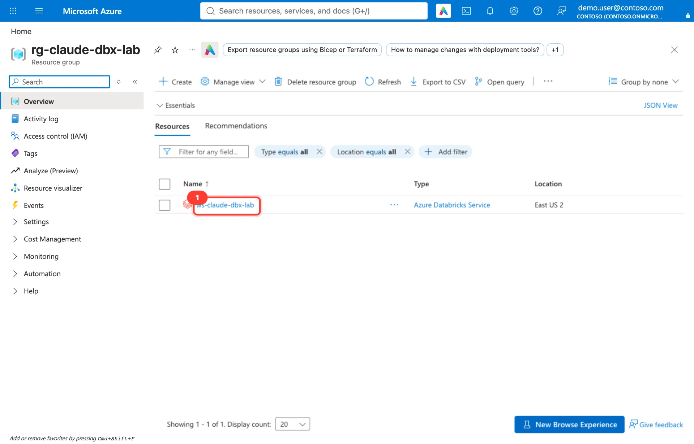
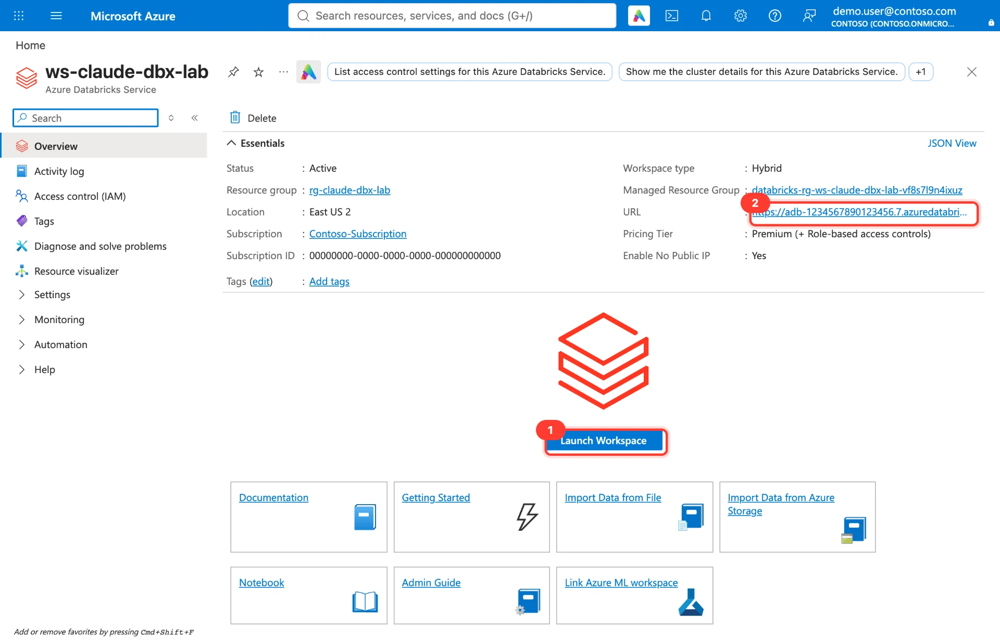
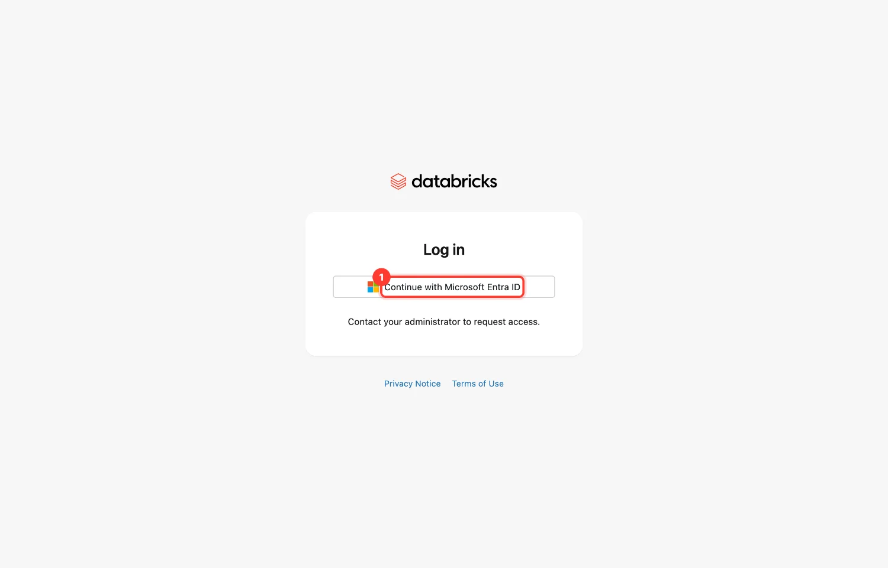
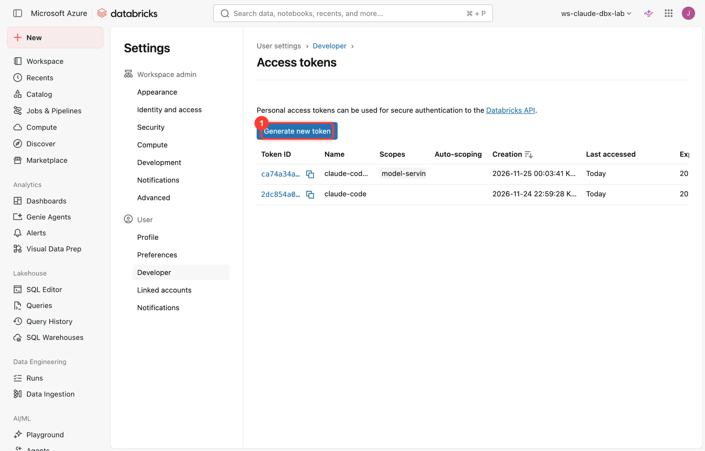
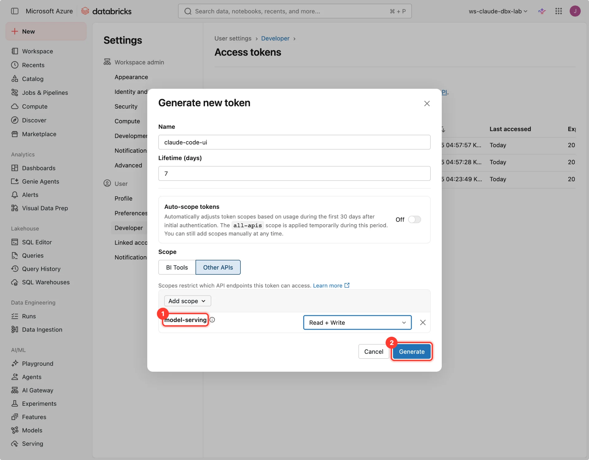
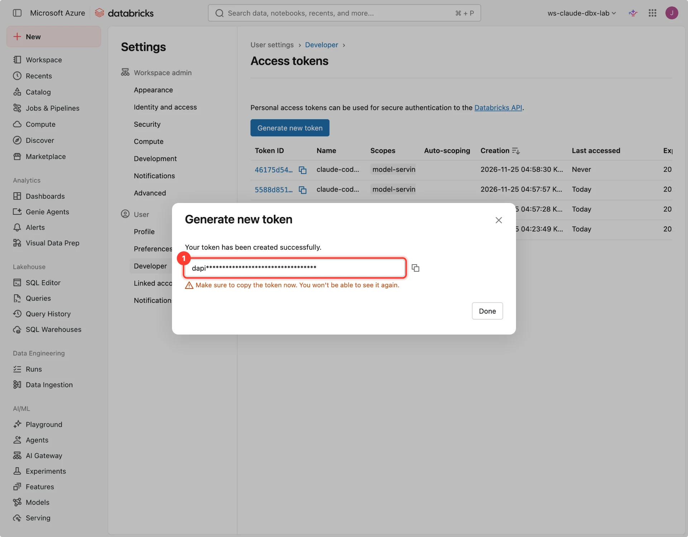
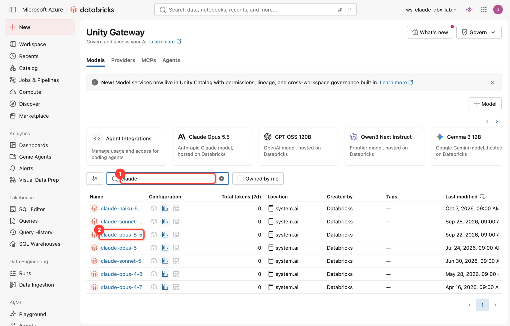
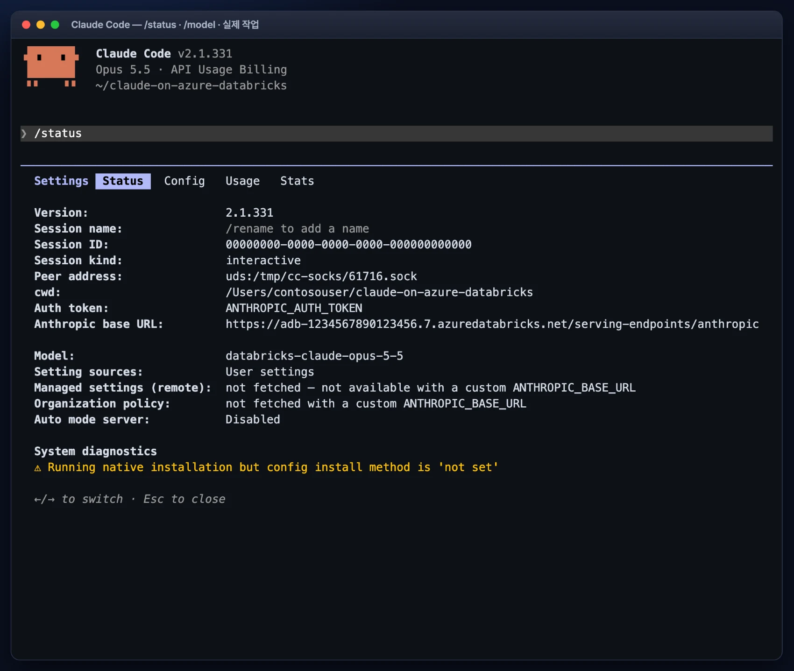
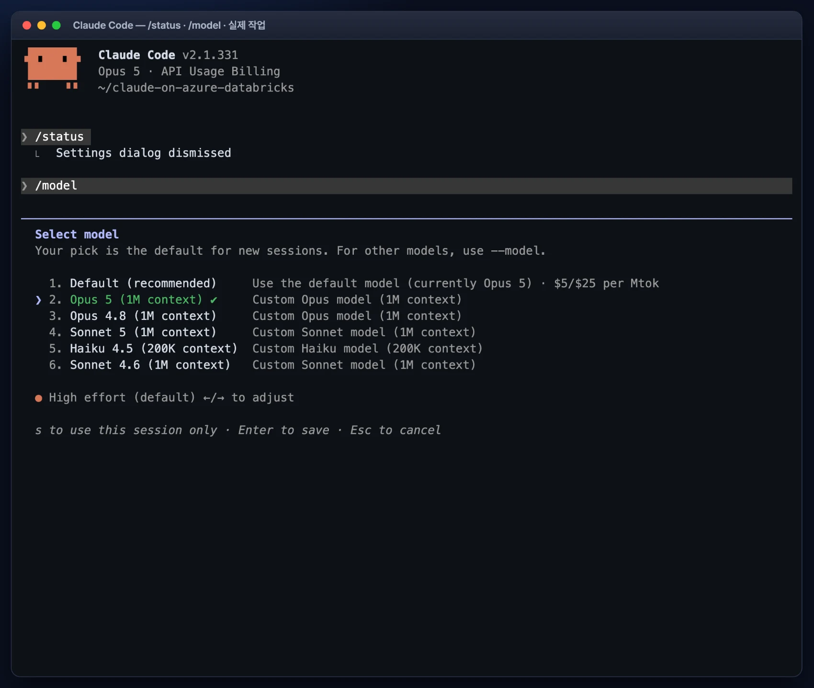
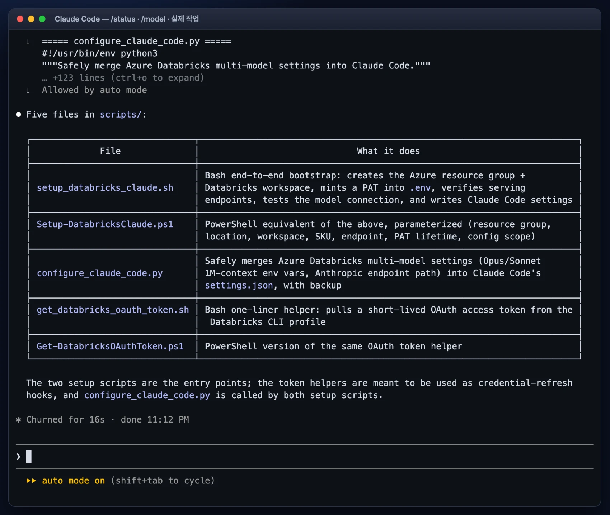

🎬 영상은 화면에 들어오면 자동 재생됩니다(무음) · ⏩는 빨리 감기 · 이미지를 클릭하면 크게 볼 수 있어요.
준비물
도구 4가지만 있으면 됩니다. 이미 있다면 버전만 확인하세요.
| 도구 | 확인 명령 | 비고 |
|---|---|---|
Azure CLI + databricks 확장 | az version | workspace를 새로 만들 때만 필요 |
| Git | git --version | 이 리포를 clone |
| Python 3.10 이상 | python3 --version | macOS 기본 python3는 3.9일 수 있습니다 → 최신 Python 설치 (실습: 3.14) |
| Claude Code (최신) | claude --version | Opus 5.5는 2.1.280, Sonnet 5.5는 2.1.284, Haiku 5.5는 2.1.293 이상 필요 → 2.1.293 이상 (claude update, 실습: 2.1.331) |
git clone https://github.com/junwoojeong100/claude-on-azure-databricks.git
cd claude-on-azure-databricks
git --version && python3 --version && az version --query '"azure-cli"' -o tsv && claude --version
python3 -c 'import sys; raise SystemExit(0 if sys.version_info >= (3, 10) else "Python 3.10+ required")' && echo "Python OK" Databricks workspace 준비
이미 있으면 건너뛰고 2단계로 가세요. 없다면 아래처럼 만듭니다 (약 3분).
az extension add --name databricks --upgrade
az login
az account set --subscription "<name-or-id>"
RG="rg-claude-dbx-lab"
LOCATION="eastus2"
WORKSPACE="ws-claude-dbx-lab"
az group create --name "$RG" --location "$LOCATION"
az databricks workspace create --resource-group "$RG" --name "$WORKSPACE" --location "$LOCATION" --sku premium
az databricks workspace show --resource-group "$RG" --name "$WORKSPACE" --query workspaceUrl --output tsv만들어지면 Azure Portal에서도 확인할 수 있습니다. Launch Workspace를 누르면 Databricks로 이동합니다.




DATABRICKS_HOST

Workspace URL(https://adb-<id>.<n>.azuredatabricks.net)만 알면 됩니다. Azure Portal의 workspace Overview → URL에서 복사하세요.
- workspace 상태가
Succeeded - URL(
adb-….azuredatabricks.net)을 확인함
접속 정보 3가지 준비
필요한 값은 URL · Token · Model ID 세 가지입니다.
| 값 | 예 | 얻는 곳 |
|---|---|---|
| Workspace URL | https://adb-<id>.<n>.azuredatabricks.net | 1단계 · Portal Overview의 URL |
| Databricks Token | PAT dapi… | 아래 2-1 (빠른 검증은 PAT, 장기 사용자 인증은 OAuth U2M) |
| Model ID | databricks-claude-opus-5-5 | 아래 2-2 |
2-1. Token(PAT) 발급
- Databricks 화면에서 사용자 메뉴 → Settings → Developer → Access tokens → Generate new token
- Name
claude-code, Lifetime 7일(예), Auto-scope tokens는 Off, Scope → Other APIs → Add scope →model-serving→Read + Write - Generate를 누르면 토큰이 한 번만 표시됩니다. 바로 복사해 안전한 곳에 보관하세요
model-serving · Read + Write, 토큰 값은 가림)33초



model-serving (권한 Read + Write) ② Generate

UI 없이 Azure 로그인으로 토큰을 만들 수도 있습니다. 2ff814a6-…는 Azure Databricks의 고정 Entra 앱 ID입니다.
HOST="https://$(az databricks workspace show --resource-group "$RG" --name "$WORKSPACE" --query workspaceUrl --output tsv)"
TOKEN=$(curl -sS -X POST "$HOST/api/2.0/token/create" \
-H "Authorization: Bearer $(az account get-access-token --resource 2ff814a6-3304-4ab8-85cb-cd0e6f879c1d --query accessToken --output tsv)" \
-H "Content-Type: application/json" \
-d '{"comment":"claude-code","lifetime_seconds":604800}' \
| python3 -c 'import sys,json; print(json.load(sys.stdin)["token_value"])')
echo "PAT: ${TOKEN:0:4}... (length ${#TOKEN})" # 값 자체는 출력하지 않습니다2-2. 호출 가능한 Claude 모델 ID 확인


claude 검색 (UI에는 claude-opus-5-5, API ID는 databricks-claude-opus-5-5)API로도 확인할 수 있습니다. 상태가 READY인 ID를 사용하세요.
export DATABRICKS_HOST="https://<workspace-host>"
export DATABRICKS_TOKEN="<databricks-token>"
curl -sS "$DATABRICKS_HOST/api/2.0/serving-endpoints" -H "Authorization: Bearer $DATABRICKS_TOKEN" \
| python3 -c 'import sys,json; [print(e["name"].ljust(34), e["state"]["ready"]) for e in json.load(sys.stdin)["endpoints"] if "claude" in e["name"]]'READY인 Claude 엔드포인트 13개14초- URL · Token · Model ID 세 값을 확보함
Databricks API를 직접 호출해 검증실행 검증
Claude Code를 건드리기 전에 URL · Token · Model ID가 맞는지 먼저 확인합니다.
export ANTHROPIC_BASE_URL="https://<workspace-host>/serving-endpoints/anthropic"
export ANTHROPIC_AUTH_TOKEN="<databricks-token>"
export DATABRICKS_MODEL="databricks-claude-opus-5-5"
curl -sS "$ANTHROPIC_BASE_URL/v1/messages" \
-H "Authorization: Bearer $ANTHROPIC_AUTH_TOKEN" \
-H "anthropic-version: 2023-06-01" \
-H "content-type: application/json" \
-d "{\"model\":\"$DATABRICKS_MODEL\",\"max_tokens\":16,\"messages\":[{\"role\":\"user\",\"content\":\"Reply with exactly: OK\"}]}" \
| python3 -m json.tool$env:ANTHROPIC_BASE_URL = 'https://<workspace-host>/serving-endpoints/anthropic'
$env:ANTHROPIC_AUTH_TOKEN = '<databricks-token>'
$env:DATABRICKS_MODEL = 'databricks-claude-opus-5-5'
$Body = @{
model = $env:DATABRICKS_MODEL
max_tokens = 16
messages = @(@{ role = 'user'; content = 'Reply with exactly: OK' })
} | ConvertTo-Json -Depth 4
Invoke-RestMethod -Method Post -Uri "$env:ANTHROPIC_BASE_URL/v1/messages" `
-Headers @{ Authorization = "Bearer $env:ANTHROPIC_AUTH_TOKEN"; 'anthropic-version' = '2023-06-01' } `
-ContentType 'application/json' -Body $Bodytype: "message"18초- 응답 최상위
type이message,content에OK
Claude Code에서 임시 검증실행 검증
3단계의 환경변수(ANTHROPIC_BASE_URL, ANTHROPIC_AUTH_TOKEN)가 남아 있는 같은 터미널에서 실행합니다.
export CLAUDE_CODE_DISABLE_EXPERIMENTAL_BETAS=1
claude --model "databricks-claude-opus-5-5" \
-p "Reply with exactly: CLAUDE CODE OK" \
--output-format json$env:CLAUDE_CODE_DISABLE_EXPERIMENTAL_BETAS = '1'
claude --model 'databricks-claude-opus-5-5' `
-p 'Reply with exactly: CLAUDE CODE OK' `
--output-format json결과가 긴 JSON이라 읽기 어렵다면 핵심 값만 골라 볼 수 있습니다 (영상이 이 방식입니다).
claude --model "databricks-claude-opus-5-5" -p "Reply with exactly: CLAUDE CODE OK" --output-format json \
| python3 -c 'import sys,json; d=json.load(sys.stdin); print("is_error :", d["is_error"]); print("result :", d["result"]); [print("model :", m, "| contextWindow", v["contextWindow"]) for m, v in d["modelUsage"].items()]'claude -p 한 번으로 Databricks 모델 응답 확인14초is_error가falsemodelUsage에databricks-claude-opus-5-5contextWindow가1000000
설정 저장 — 다중 모델 picker실행 검증
임시 검증이 끝난 같은 터미널에서 설정 도구를 실행하면 /model 목록에 Databricks 모델 5개가 표시됩니다.
python3 scripts/configure_claude_code.py # 모든 프로젝트에 적용 (~/.claude/settings.json)
python3 scripts/configure_claude_code.py --scope project # 현재 프로젝트에만 (.claude/settings.local.json)py -3 scripts\configure_claude_code.py
py -3 scripts\configure_claude_code.py --scope projectconfigure_claude_code.py 실행 → 생성된 settings.json (토큰은 마스킹)10초도구가 해 주는 일
- 기존
~/.claude/settings.json을.bak.<timestamp>로 백업하고 최신 1개만 유지 - 관련 없는 설정은 그대로 두고 Databricks routing·picker 키만 병합
- 충돌하는 provider routing 키 제거
- macOS/Linux/WSL은 파일 권한
0600, Windows는icacls로 현재 사용자만 수정
/model 표시 | Claude Code 선택값 | Databricks 모델 ID | context |
|---|---|---|---|
| Opus 5.5 (1M context) | opus | databricks-claude-opus-5-5 | 1,000,000 |
| Opus 5 (1M context) | fable | databricks-claude-opus-5 | 1,000,000 |
| Sonnet 5.5 (1M context) | sonnet | databricks-claude-sonnet-5-5 | 1,000,000 |
| Sonnet 5 (1M context) | custom option | databricks-claude-sonnet-5 | 1,000,000 |
| Haiku 5.5 (1M context) | haiku | databricks-claude-haiku-5-5 | 1,000,000 |
- Claude Code를 완전히 종료했다가 다시 시작하면 picker가 갱신됨
- 다섯 응답 모두
is_error가false
최종 확인 — /status실행 검증
새 Claude Code 세션을 열어 연결 경로와 모델을 눈으로 확인합니다.
claude # 그다음 /status → /model/status로 경로 확인 → 파일을 읽는 실제 작업까지 Databricks 모델로 동작17초

/status — Anthropic base URL이 Databricks, Auth token은 ANTHROPIC_AUTH_TOKEN, Model은 databricks-claude-opus-5-5

/model — 설정한 5개 모델이 picker에 표시됨

scripts/ 폴더를 읽고 설명을 생성/status의 Anthropic base URL이https://<workspace-host>/serving-endpoints/anthropic- Model이
databricks-claude-* - 등록한 모델의 테스트 응답이 모두 성공
선택 · 심화
필요할 때만 펼쳐 보세요.
단일 모델 최소 설정 (picker 없이)
특정 모델만 허용하거나 picker mapping이 필요 없는 환경에서는 아래 최소 설정으로 충분합니다.
{
"permissions": { "deny": ["WebSearch"] },
"model": "databricks-claude-opus-5-5",
"env": {
"ANTHROPIC_BASE_URL": "https://<workspace-host>/serving-endpoints/anthropic",
"ANTHROPIC_AUTH_TOKEN": "<databricks-token>",
"CLAUDE_CODE_DISABLE_EXPERIMENTAL_BETAS": "1"
}
}Unity Gateway 경로로 호출하기 (/ai-gateway/anthropic)
Databricks 문서의 최신 예제는 Unity Gateway 경로를 씁니다. base URL은 https://<workspace-host>/ai-gateway/anthropic, 모델 이름은 system.ai.<model>입니다. 같은 모델을 이렇게도 호출할 수 있고 Claude Code도 그대로 동작합니다.
export DATABRICKS_HOST="https://<workspace-host>"
export DATABRICKS_TOKEN="<databricks-token>"
curl -sS "$DATABRICKS_HOST/ai-gateway/anthropic/v1/messages" \
-H "Authorization: Bearer $DATABRICKS_TOKEN" \
-H "anthropic-version: 2023-06-01" \
-H "content-type: application/json" \
-d '{"model":"system.ai.claude-opus-5-5","max_tokens":16,"messages":[{"role":"user","content":"Reply with exactly: OK"}]}'
# Claude Code (설정 저장 전, 3~4단계와 같은 방식)
ANTHROPIC_BASE_URL="$DATABRICKS_HOST/ai-gateway/anthropic" ANTHROPIC_AUTH_TOKEN="$DATABRICKS_TOKEN" \
claude --model "system.ai.claude-opus-5-5" -p "Reply with exactly: GATEWAY OK" --output-format jsonsystem.ai.claude-opus-5-5)26초| 경로 | base URL | 모델 이름 | UI에서 PAT를 만들 때 scope |
|---|---|---|---|
| 기본 (이 가이드) | https://<workspace-host>/serving-endpoints/anthropic | databricks-claude-opus-5-5 | model-serving · Read + Write |
| Unity Gateway | https://<workspace-host>/ai-gateway/anthropic | system.ai.claude-opus-5-5 | ai-gateway · Read + Write |
이 리포의 설정 도구(configure_claude_code.py)와 스크립트는 기본 경로를 사용합니다. 설정을 저장한 뒤에는 ~/.claude/settings.json의 env가 shell 환경변수보다 우선하므로, 경로를 바꾸려면 설정 파일의 ANTHROPIC_BASE_URL과 모델 ID를 바꾸세요.
PAT 대신 OAuth U2M (토큰 자동 갱신)
Databricks CLI로 로그인하면 access token이 자동 갱신됩니다. Databricks CLI가 필요합니다.
databricks auth login --host "https://<workspace-host>" --profile claude-code
export DATABRICKS_HOST="https://<workspace-host>"
python3 scripts/configure_claude_code.py --auth oauth
# helper 직접 확인
DATABRICKS_CONFIG_PROFILE=claude-code scripts/get_databricks_oauth_token.sh운영 자동화는 사용자 브라우저 로그인이 필요한 U2M 대신 OAuth M2M(서비스 주체)을 사용하세요.
VS Code extension에서 사용
extension은 로그인 확인 전에 credential을 읽으므로 VS Code 사용자 settings의 claudeCode.environmentVariables에도 값을 넣는 것이 가장 확실합니다.
{
"claudeCode.environmentVariables": [
{ "name": "ANTHROPIC_BASE_URL", "value": "https://<workspace-host>/serving-endpoints/anthropic" },
{ "name": "ANTHROPIC_AUTH_TOKEN", "value": "<databricks-token>" },
{ "name": "CLAUDE_CODE_DISABLE_EXPERIMENTAL_BETAS", "value": "1" }
]
}1M context와 요청 한도는 별개입니다
| 구분 | 값 |
|---|---|
| 1M context 모델 | Opus 5.5 · Sonnet 5.5 · Haiku 5.5 · Opus 5 · Sonnet 5 · Opus 4.8 · Opus 4.7 · Opus 4.6 · Sonnet 4.6 (4.6은 [1m] 접미사 필요) |
| 200K context 모델 | Opus 4.5 · Sonnet 4.5 · Haiku 4.5 |
| pay-per-token 기본 한도 (Claude) | 입력 1M tokens/분 · 출력 100K tokens/분 · 시간당 360,000 요청 · payload 4 MB (Haiku 5.5만 입력 200K · 출력 20K) |
모델의 context window가 1M이어도 한 요청에서 1M tokens를 모두 쓸 수 있다는 뜻이 아닙니다. 지속 고부하는 provisioned throughput을 검토하세요.
Databricks로 바꾸면 Claude Code 기능이 얼마나 유지되나요?
로컬 기능(파일·셸·Git·MCP·hooks·subagents)은 거의 그대로 동작하고, Anthropic 계정·서버에 의존하는 기능(Web Search, Remote Control, Routines 등)은 제한됩니다. 종합 참고치 약 88% — 자세한 표는 기능 커버리지 문서를 보세요.
문제 해결
증상 → 확인할 항목 순서로 정리했습니다. 위 두 개의 scope 오류는 이번 실습에서 직접 재현한 것입니다.
| 증상 / 메시지 | 확인할 항목 |
|---|---|
403 does not have required scopes: model-serving | PAT scope에 model-serving을 추가했는지 (model-serving-inference만으로는 부족) |
403 [model-serving:read] ... cannot send a POST | scope 권한을 Read + Write로 변경 (또는 CLI로 만든 scope 없는 토큰 사용) |
403 does not have required scopes: ai-gateway | Unity Gateway 경로(/ai-gateway/anthropic)는 PAT scope ai-gateway(Read + Write)가 필요 — 기본 경로는 model-serving |
직접 API 호출도 401 | 토큰 만료 여부, URL이 같은 workspace인지, PAT를 다른 workspace에서 만들지 않았는지 |
| 직접 API는 성공, Claude Code만 실패 | /status의 base URL, settings.json env 우선순위, claude 래퍼/alias, Claude Code 버전 |
beta 관련 400 | CLAUDE_CODE_DISABLE_EXPERIMENTAL_BETAS=1 |
web_search_* 관련 400 | permissions.deny에 WebSearch |
contextWindow가 200000 | Claude Code를 2.1.293 이상으로 claude update 후 완전 재시작. Sonnet 4.6·Opus 4.6처럼 접미사로만 1M이 되는 모델은 값 끝에 [1m] |
There's an issue with the selected model | 모델 ID가 READY 목록에 있는지, Claude Code 버전 (Opus 5.5 ≥ 2.1.280 · Sonnet 5.5 ≥ 2.1.284 · Haiku 5.5 ≥ 2.1.293). fable은 이 workspace에서 호출할 수 없으므로 ANTHROPIC_DEFAULT_FABLE_MODEL을 지정 |
404 … Model claude-fable-… is not available in your region | Fable은 cross-Geo 처리(데이터 거주 설정)가 필요하고 5.2는 Unity Gateway 전용입니다. 기본 구성은 Opus 5.5·Sonnet 5.5·Haiku 5.5 사용 |
| 모델을 찾지 못함 | READY인 모델 ID인지, workspace 리전의 모델 가용성 |
403 rate limit of 0 | 모델·리전, cross-Geo 설정, endpoint CAN QUERY/EXECUTE 권한, 계정 용량 |
일반적인 429 | ITPM·OTPM·RPH 한도, 재시도 간격 |
python3가 3.9로 실행됨 | Python 3.10 이상을 설치하고 PATH 우선순위 확인 |
az databricks 명령이 없음 | az extension add --name databricks --upgrade |
정리
이 실습으로 만든 전용 리소스만 삭제하세요. 공유 리소스 그룹에는 실행하지 마세요.
# 1) 토큰 폐기: Databricks → Settings → Developer → Access tokens → 해당 토큰 Revoke
# 2) 실습용 리소스 그룹 삭제 (workspace 포함)
az group delete --name "$RG" --yes --no-wait
# 3) managed resource group까지 사라졌는지 확인 (비동기 삭제 — 수십 분 걸릴 수 있음)
az group list --query "[?starts_with(name,'databricks-rg-')].{name:name,state:properties.provisioningState}" --output table
# 4) Claude Code 설정을 되돌리려면 백업을 복원
ls ~/.claude/settings.json.bak.*
cp ~/.claude/settings.json.bak.<timestamp> ~/.claude/settings.json